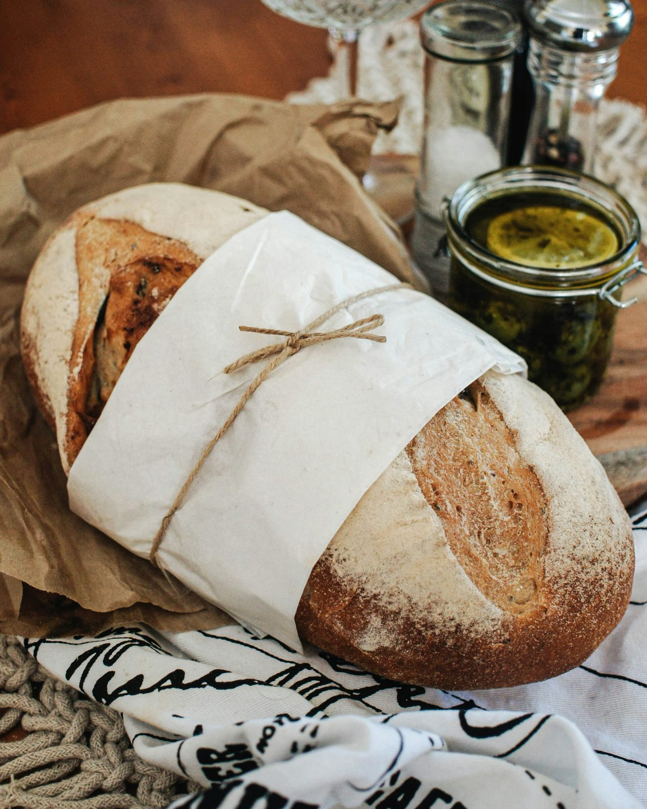
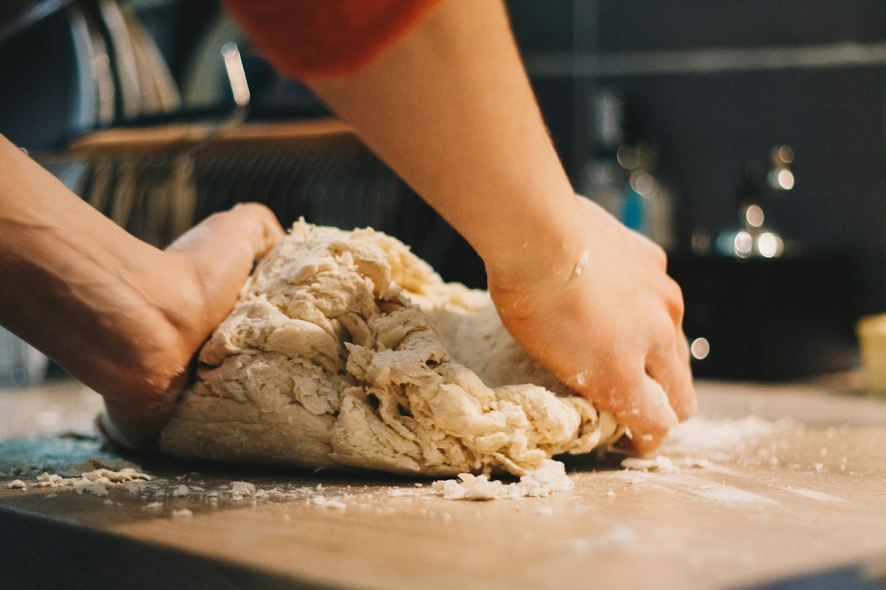
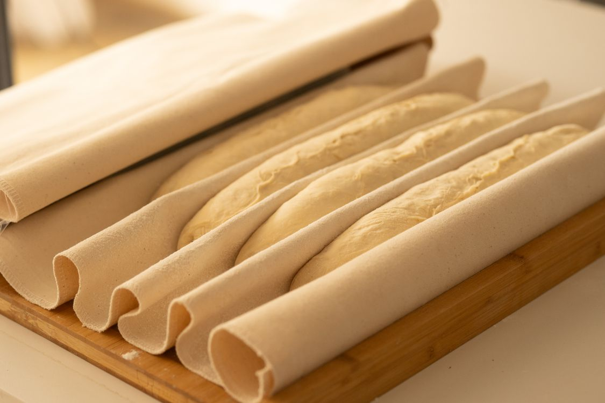
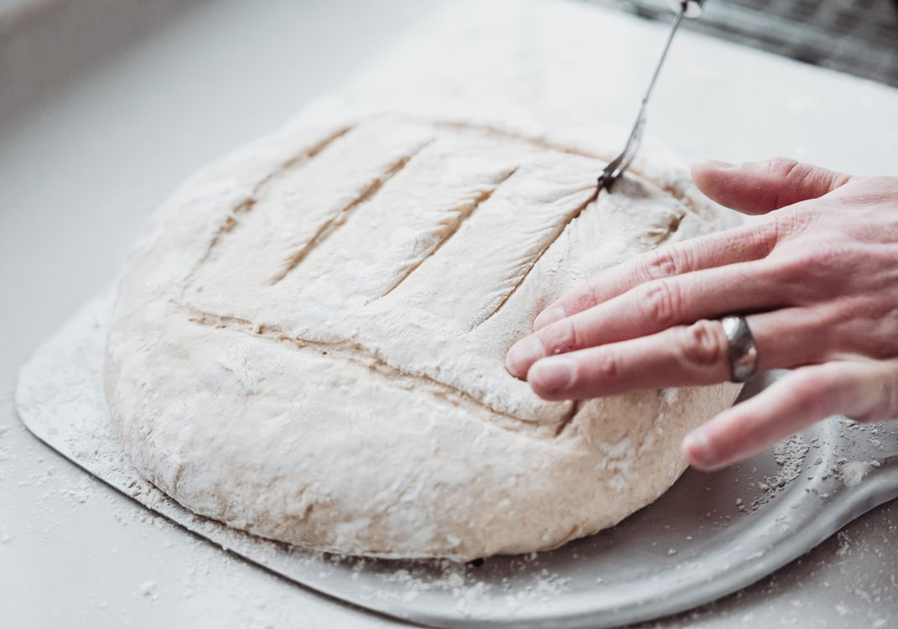
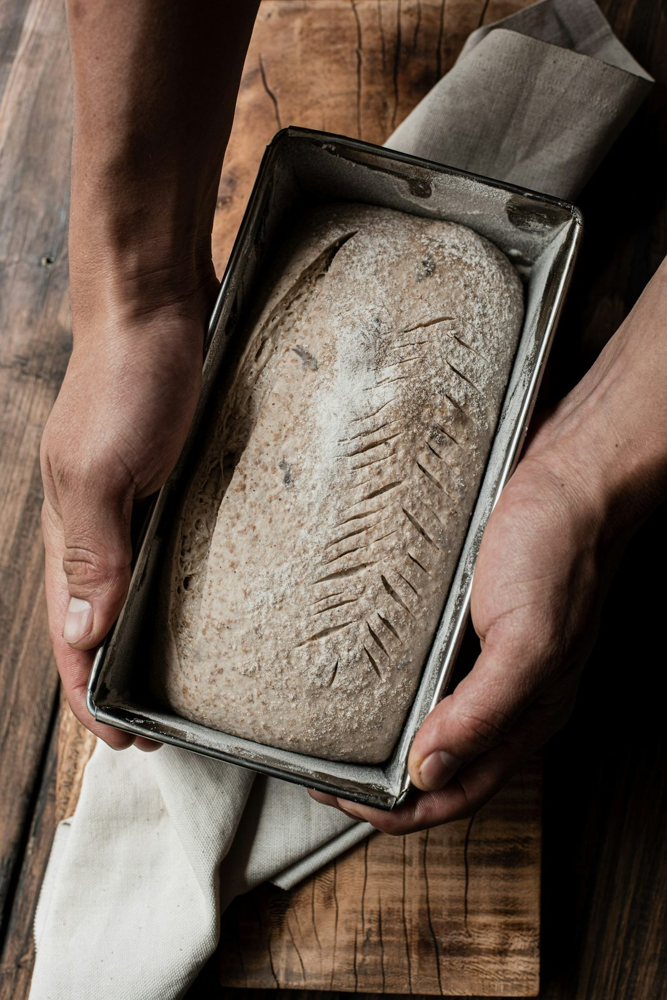
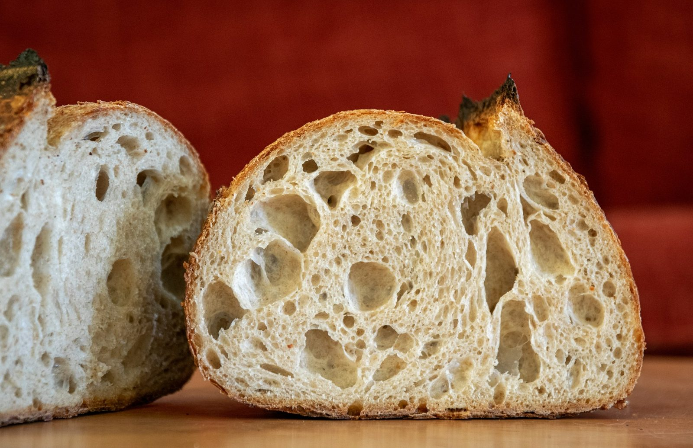
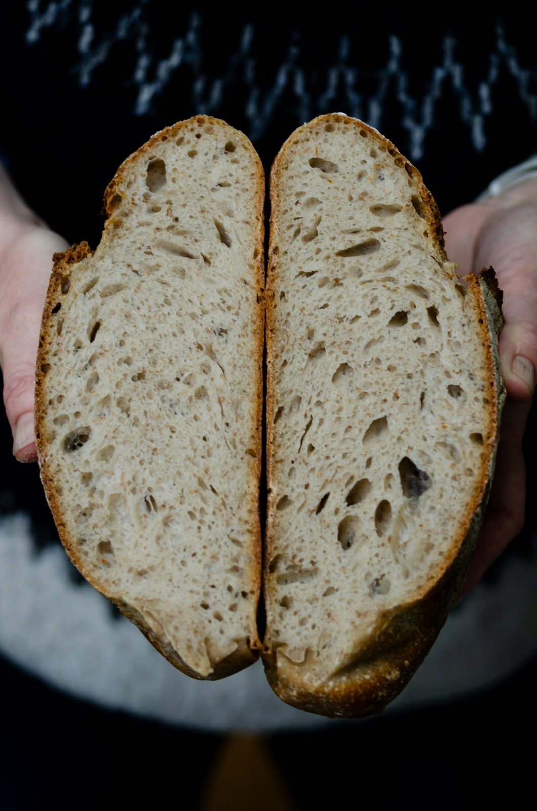

01 · flour
Fresh-milled mood, simple pantry.
Bread flour, whole grain, water, salt, and a starter that gets more attention than most houseplants.
one baker · neighborhood pickup · naturally leavened
Slow sourdough for the kind of morning that asks for a torn heel of bread, salted butter, and nothing hurried.

from flour to crumb
Each bake starts before the weekend does: starter refreshed, dough folded by hand, baskets tucked under linen, and the oven brought up until the crust can blister.
Bread flour, whole grain, water, salt, and a starter that gets more attention than most houseplants.

Coil folds, rest, and another patient turn until the dough feels airy and alive.

Baskets stay covered while the dough proofs slowly and keeps its own soft schedule.

The slash tells the loaf where to open, then steam and stone do the rest.

The oven gives the crust its crackle, the loaf comes out fragrant, and the room goes quiet for a minute.

Made for butter melting into the holes, soup at the edge of the bowl, or a first slice over the sink.
the one-baker rhythm
I bake from a home oven with a deck-bake obsession: small enough to know every loaf, steady enough that neighbors can plan breakfast around it.
The starter lives on the counter, gets fed twice before a bake, and decides the schedule with the weather. If the dough needs another hour, it gets another hour.
miga means crumb
Open but not empty, glossy but not gummy, with enough structure for a thick swipe of butter.

preorder rhythm
Text your order by Friday noon. I’ll confirm the bake, tuck your name on a bag, and have it waiting between 9:30 and 11:00 Sunday morning.
hello@migabakery.example